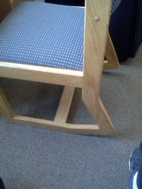
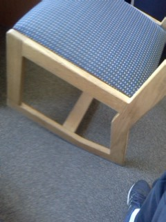
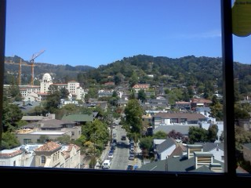
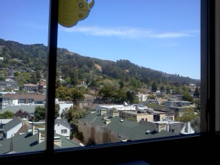
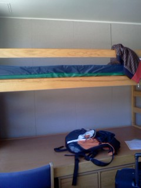
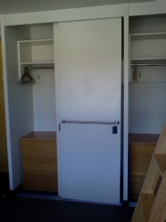
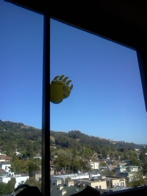

Berkeley-Four-Days
伯克利四天记
住
从foothill的summer housing 搬到了正式的 Unit1 freeborn hall。帮我们搬行李的志愿者既当司机又做脚夫，好不辛苦。在foothill等车的时候遇到了 一个友好的美国学长Tim，本科物理，现在读核物理的phd。帮我们开车的志愿者和他相熟，说福岛事故后，就是他的小组负责监控berkeley的放射物质含量。 我们楼层的管理员 Navneet 是一个很友善的学姐，我打字的这会正在开一个birthday party。
开始放图：
 
有趣的摇摇椅
 
看窗外
 
宿舍

熊在伯克利无处不在
吃
前几天在subway解决了好多顿，今天发现了Asian Ghetto，中午吃了生平第一个falafel，晚上吃了生平第一个taco，味道 真的很不错。价格也公道。Unit1 较之偏远的foothill，在就餐上真是方便多了。（之前也吃过一些素鸡，素肉等等，还是falafel的仿肉效果最逼真！）
我这几天都是就着水龙头喝水，也没像部分同志那样起肠胃反应，看似我还是满强壮的？
杂项
这几天一个主要的感觉就是美国人很友好。大部分店员都会跟客户很真诚地问好。我在那家falafel店无比迷茫的时候，哪位女店员很热心的向我做了介绍， 我说我从没吃过falafel，她还给了我一个样品品尝。我走了，她还很仔细的问我吃的如何，习不习惯。
我去chase开户，遇见的是一个叫 Ben 的 banker，他在进chase之前在广西南宁教过英语，人也是很好。一个学生账户就有一个personal banker，这在国内是 不可想象的。
时间也晚了，暂且就写到这里。